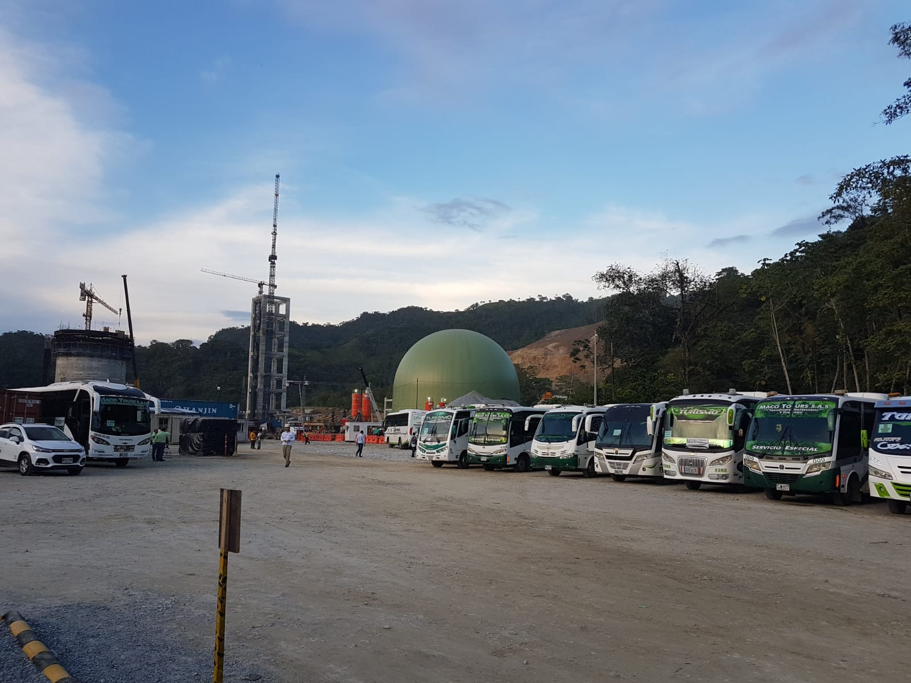
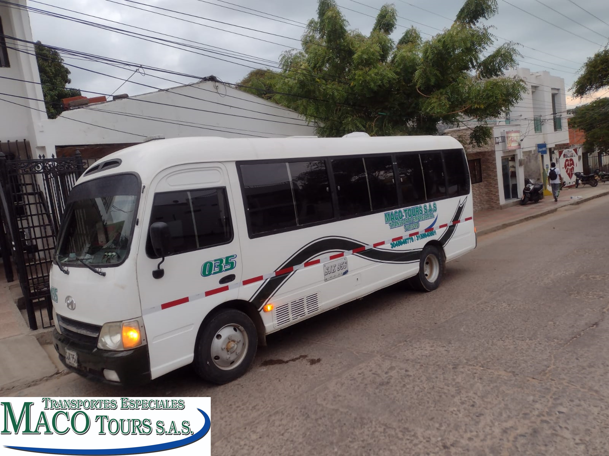
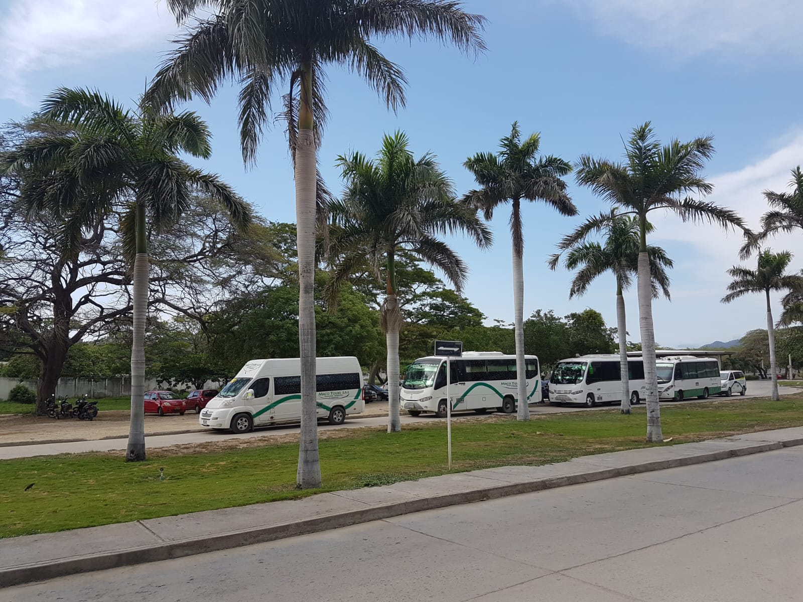
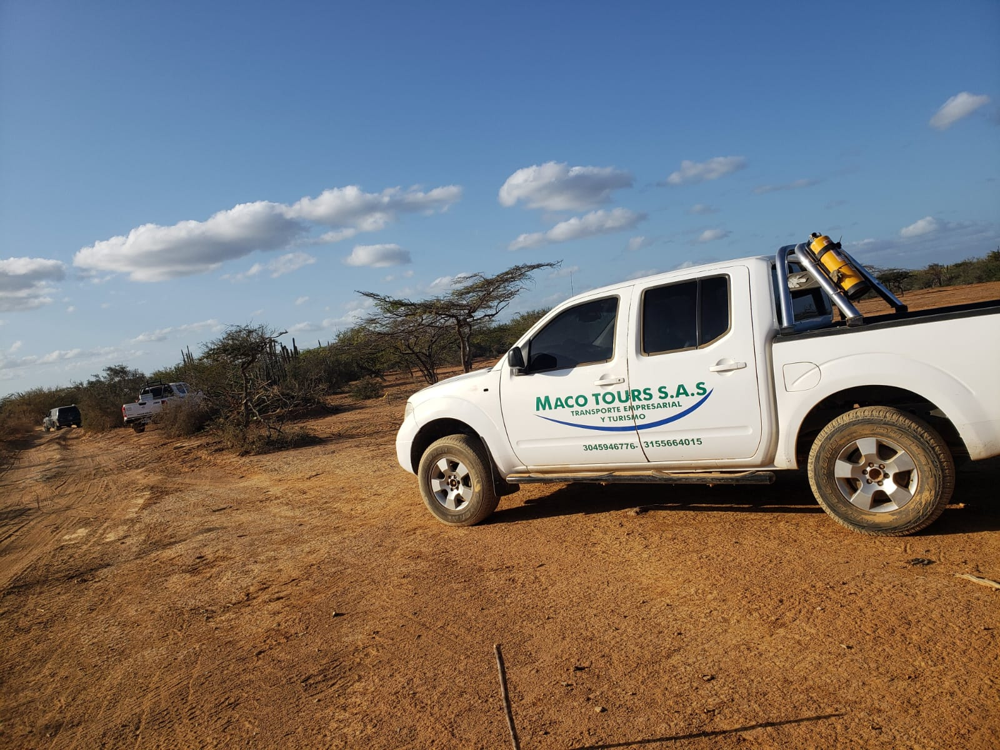
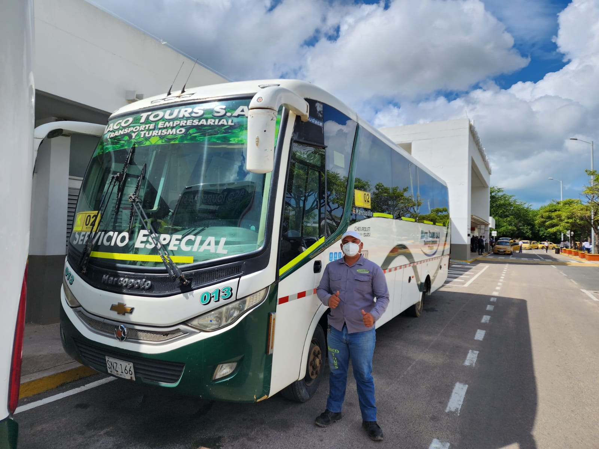
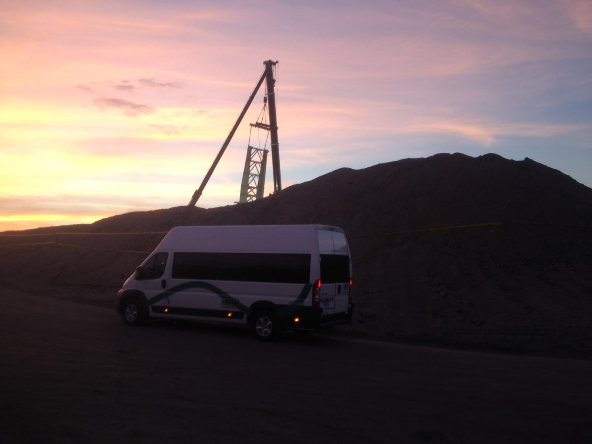

Nuestros Servicios

Transporte Empresarial
El transporte empresarial ofrece soluciones eficientes para las necesidades de movilidad de tu empresa. Con un enfoque en la puntualidad y comodidad, nuestros servicios garantizan la satisfacción tanto de tus empleados como de tus clientes. Contamos con una flota moderna y conductores profesionales que se asegurarán de que cada viaje sea seguro y confortable.

Transporte Escolar
Nuestro servicio de transporte escolar está diseñado pensando en la seguridad y bienestar de los estudiantes. Con conductores capacitados y vehículos equipados con las últimas medidas de seguridad, ofrecemos una solución confiable para el traslado de alumnos hacia y desde la escuela. Tu tranquilidad y la de los padres de familia es nuestra prioridad.

Transporte Turistico
Descubre los destinos más fascinantes con nuestro servicio de transporte turístico. Ya sea que estés planeando un viaje en grupo o una excursión individual, nuestro equipo está listo para hacer de tu experiencia algo inolvidable. Con comodidades a bordo y guías expertos, te llevaremos a explorar nuevos lugares y vivir emocionantes aventuras.

Transporte Empresarial: Eficiencia para tu Negocio
Nuestro servicio de transporte empresarial ofrece eficiencia y comodidad para tu empresa. Optimiza el tiempo de tus empleados al proporcionarles traslados seguros y puntuales. Con nuestra flota moderna y conductores profesionales, garantizamos que tus viajes de negocios sean productivos y sin preocupaciones.

Transporte Escolar: Tranquilidad para Padres y Estudiantes
Con nuestro servicio de transporte escolar, proporcionamos tranquilidad a los padres y seguridad a los estudiantes. Los padres pueden confiar en que sus hijos llegarán a la escuela de manera segura y a tiempo, mientras que los estudiantes disfrutan de viajes cómodos y sin estrés. Nuestros conductores capacitados garantizan un traslado confiable y tranquilo.

Transporte Turístico: Descubre y Disfruta sin Preocupaciones
Explora nuevos destinos y vive experiencias inolvidables con nuestro servicio de transporte turístico. Con nosotros, puedes relajarte y disfrutar del viaje mientras te llevamos a descubrir lugares fascinantes y emocionantes. Nuestros guías expertos se encargarán de que tu aventura sea segura, cómoda y llena de momentos memorables.
¿por que elegirnos?
Nuestros servicios de transporte están diseñados para ofrecerte beneficios tangibles en cada viaje. Desde optimizar el tiempo de trabajo en el transporte empresarial hasta proporcionar seguridad y comodidad en el transporte escolar, y crear experiencias memorables en el turismo, nos comprometemos a hacer que tus viajes sean productivos, seguros y placenteros. Confía en nosotros para disfrutar de los beneficios de un transporte confiable y de calidad.